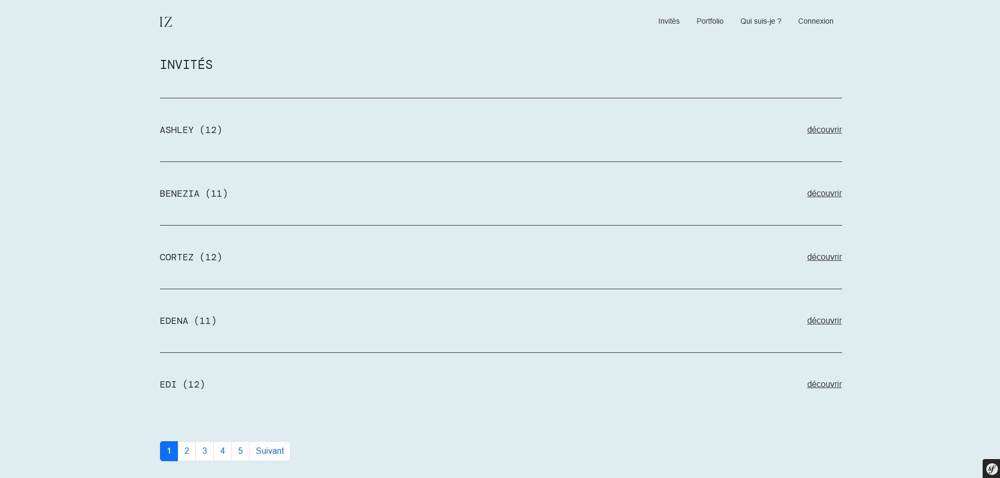
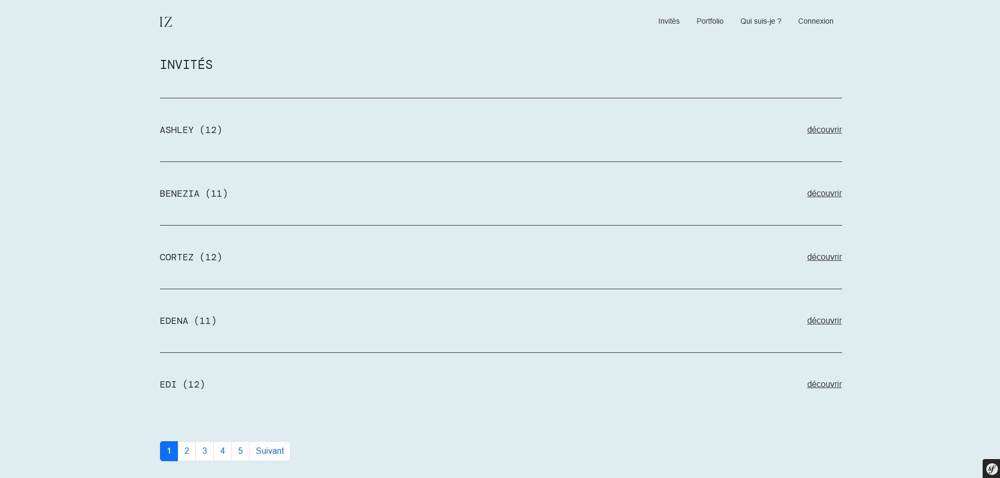

Fonctionnalités :
◎ Migration du site vers une version plus récente de Symfony
◎ Vérification des fichiers uploadés (type et taille)
◎ Chargement dynamique des utilisateurs depuis une base de données
◎ Gestion des invités (ajout, suppression, blocage, listing)
◎ Optimisation des performances, notamment sur la page "Invités"
◎ Implémentation de tests unitaires et fonctionnels avec un taux de couverture > 75%
◎ Rédaction de la documentation technique et des bonnes pratiques de contribution
◎ Mise en place d’une intégration continue pour automatiser les tests et les analyses
◎ Production d’un rapport de performance avant et après optimisation
Technologies utilisées :
◎HTML5
◎CSS3
◎PHP 8.3
◎Symfony 5.4 >> 6.4
◎MySQL
◎PHPUnit (tests unitaires et fonctionnels)
◎PHPStan (outils analytique)
◎Github Actions (intégration continue)
◎Profiler Symfony (analyse et optimisation des performances)
 
